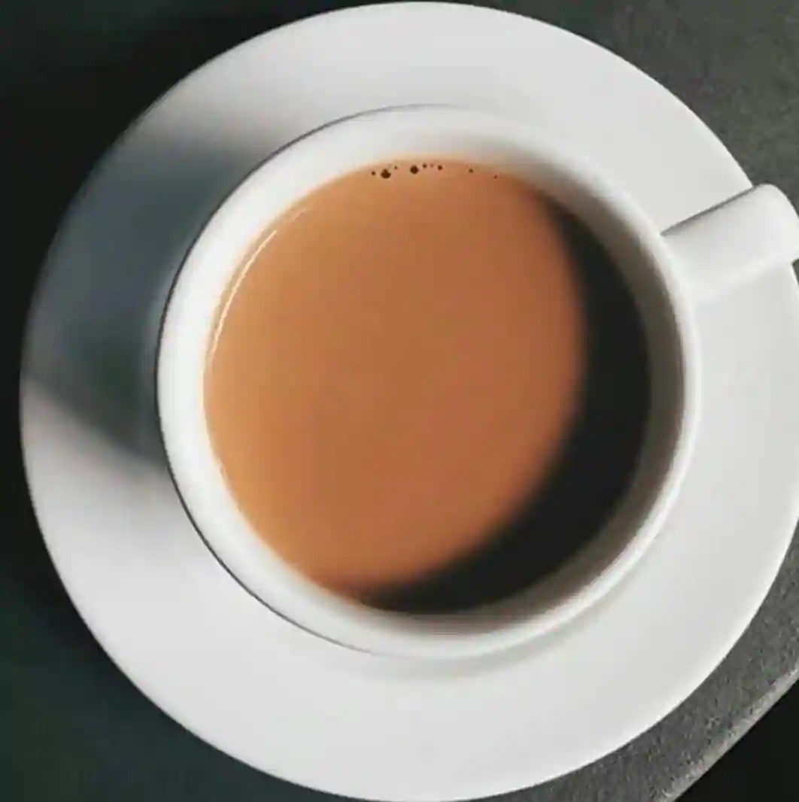

Assam Tea

This is a simple Assam tea recipe.
- ⏲️ Prep time: 1 min
- 🍳 Cook time: 5 min
- 🍽️ Servings: 1
Ingredients
- 2 teaspoons of Assam Tea
- 150 ml of fresh water
- Sugar (Optional)
- Milk (Optional)
Directions
- Add 150 ml of water to a small pan and bring it to boil.
- Then add 2 teaspoons of tea into it and reduce the heat to low.
- Strain the tea using a tea filter into a cup.
- Add sugar and milk to taste.
Contribution
- Chandra Kiran - GitHub